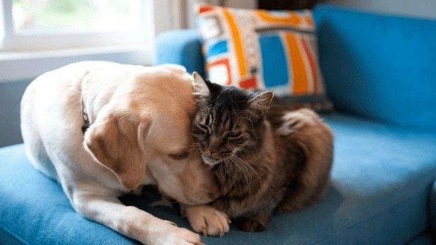
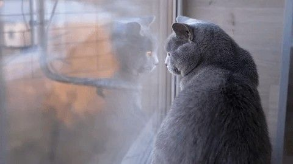
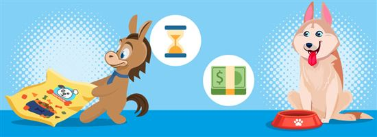
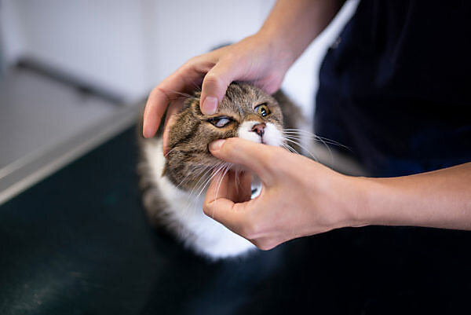

Science-backed, vet-informed tools to help you care for your furry family. Your data stays in your browser — we never see it.
Find the exact daily calories your dog needs based on breed, weight, and activity level.
Calculate Now →Indoor or outdoor? Kitten or adult? Learn your cat's ideal daily portion in seconds.
Calculate Now →Forget the old "multiply by 7" rule. Convert dog years to human years with science.
Check Now →Is your pet at a healthy weight? Quick check with breed-specific Body Condition Score.
Check Now →How much water should your pet drink daily? Factors in diet, activity, and weather.
Calculate Now →Food, vet visits, insurance, toys, emergencies — calculate your annual pet budget.
Estimate Now →I posted on r/dogs asking for feeding advice. I got 147 comments. Half said raw diet. Half said kibble. Someone said I was abusing Gus.

I thought two pets would be twice the work. I was wrong. It's three times the work. And five times the love. Here is what I learned the hard way.
'Why is my dog licking his paw at 3 AM?' 'Can dogs eat grapes?' I've googled all of these. At 2 AM. While Gus snores and Mochi knocks things off my de...

Mochi was on dry food. Dr. Patel suggested wet food for weight loss and hydration. I calculated the cost difference, the calorie density, the moisture...

Food, vet visits, insurance, toys, the emergency visit when he ate a crayon — I added it all up. Gus costs me about $2,400 per year.

Forty cats in a two-bedroom apartment. Zero vet visits. Then Mochi came home with me, and everything changed. Here is what the first year actually cos...